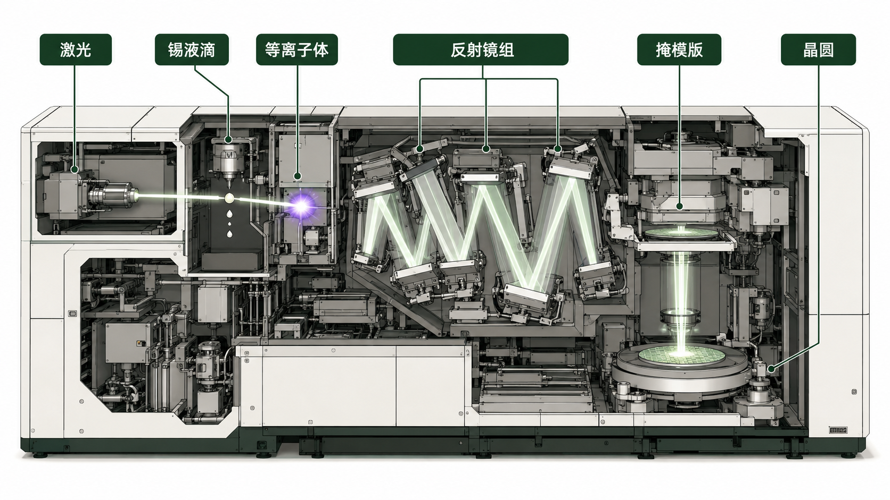
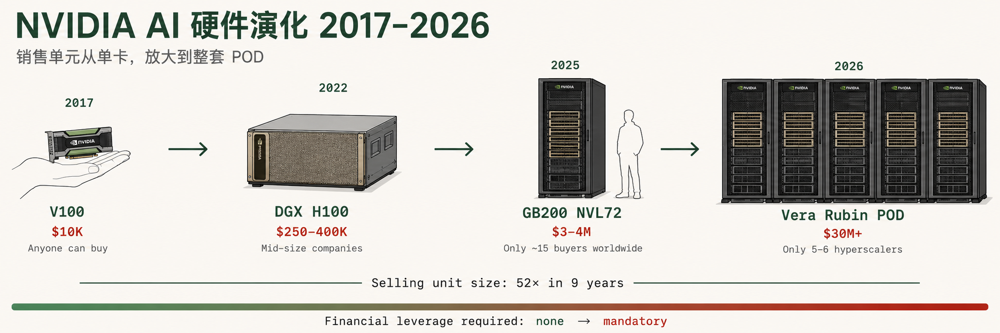
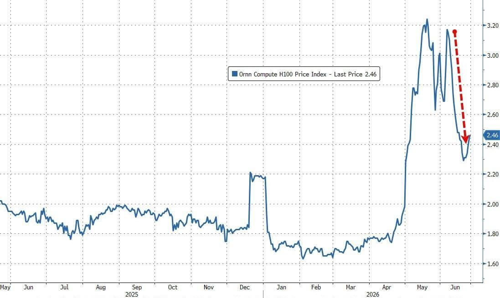
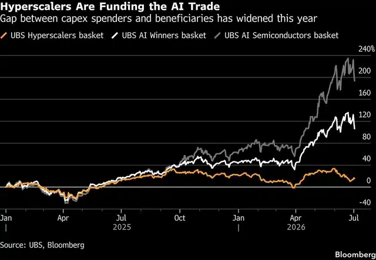
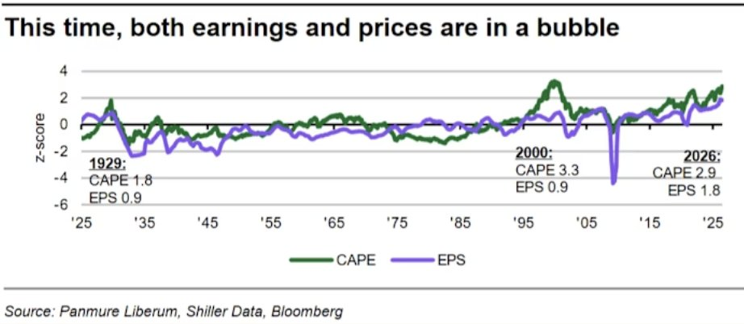
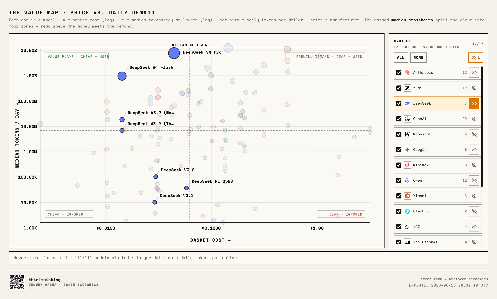
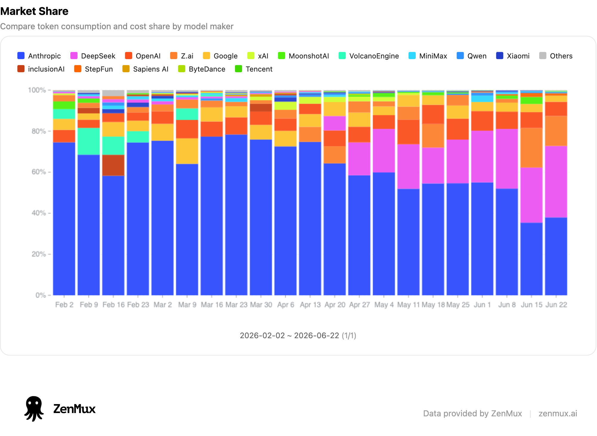

泡沫工程走到Q3，核验的是"六层因果链每层走到哪了"。其中最集中的一个节点：整条AI金融链——GPU抵押品价值、CoreWeave们的还款能力、大厂capex的回报假设——全部隐含依赖NVIDIA的定价权。而对这个定价权最系统的外部压力，来自中国。四个方向的压力在同时发生（DeepSeek、电力、国产芯片、摩尔失效窗口），我们把它重组为三条可核验的线，逐条给读数。
把$4.72万亿拆开看，它站在三层支撑上，三层的性质完全不同：事实层——本季收入$816亿、毛利74.9%，已发生、审计过、攻不动；结构层——三层锁定（CUDA/NVLink/CoWoS）撑起的定价权，当前为真，但每天要靠护城河来守；预期层——PE(TTM) 29.8对前瞻PE 19.6，两个数相除=市场已按"未来12个月利润再涨约52%"付了钱（口径：29.8/19.6≈1.52，由两个已核PE反推）。预期层是估值的大头，也是唯一没发生的部分。
赌注① 它能一直卖这么贵吗？~75%毛利=平台溢价（CUDA生态+NVLink系统+CoWoS产能优先），不是制造溢价。半导体史上，超高毛利+单一供应商，在客户有钱有动机自研时很难维持十年（Intel 60%+→今天~45%；思科2000年65%→承压）。← 芯片线核验（CN3-8）
赌注② 是不是非英伟达不可？需求最大的几家（微软/谷歌/亚马逊/Meta）全在自研芯片。估值赌他们造不出同等系统、或不敢把大模型压上去。← 模型线核验（1.1-3.1）：中国已经给出"敢用"的实例
赌注③ 做AI是不是必须用最贵的卡？当前$7,250亿capex建立在"更大模型+最贵芯片"的堆料路线上。估值赌不出现"不用最贵的也能做AI"的路线替代。← 模型线+电力线核验：低成本路线的物理底盘在谁手里
| 阶段 | 编号 | 问题 | 一句话回答 |
|---|---|---|---|
| 零 · 为什么 | CN0 | 为什么单独研究中国因素？ | 它同时压着Q3假设五（定价权单点）和破裂形态变量 |
| 一 · 起点 | CN1 | 估值由什么支撑？ | 三层塔：事实层（攻不动）/结构层（每天守）/预期层（估值大头，未发生） |
| 一 · 起点 | CN2 | 估值暗含什么假设？ | 三个直问：能一直这么贵吗 / 非英伟达不可吗 / 必须用最贵的卡吗 |
| 二 · 芯片线① | CN3 | 光刻机：芯片为什么需要它，谁控制它 | ASML独家EUV，$1.5亿/台~50台/年，全面禁售中国 |
| 二 · 芯片线① | CN4 | 中美芯片现状：7nm vs 3nm | 看似差两代——但摩尔定律失效了，"两代"已不是以前的"两代" |
| 二 · 芯片线② | CN6 | 摩尔定律是什么？ | 晶体管数量每两年翻倍，同样价格买到的算力越来越多，60年——全行业定价的隐含前提 |
| 二 · 芯片线② | CN7 | 物理极限到头了 | 量子隧穿——硅基路线在1nm附近见底，还剩三站 |
| 二 · 芯片线② | CN8 | 性能提升受阻 | 密度提升从~80%降到~10%，SRAM近零缩放——经济引擎停了 |
| 二 · 芯片线② | CN9 | 英伟达的选择是什么？ | 堆料、越卖越贵：机柜+95%、九年52×——涨价守毛利，订单变脆 |
| 三 · 中国因素 | 3.1 | 够用策略：中国靠什么竞争 | 7nm+堆料=够用，高精尖有份就行，主战场在够用+便宜+规模 |
| 三 · 中国因素 | 3.2 | 历史规律：有先例吗 | 移动靶→减速靶+三次反超：前沿撞极限时，规模和制造力反超技术领先 |
| 三 · 中国因素 | 3.3 | 护城河：定价权靠什么守 | BOM $6,400卖$30-40K，三层锁定守护+Intel/思科参照——超高毛利难守十年 |
| 三 · 中国因素 | 3.4 | 中国芯片能造能卖吗 | EUV原型已出+份额翻转+管制反效果——制造层在松动 |
| 三 · 中国因素 | 3.5 | 生态突破：切换成本还挡得住吗 | CUDA兼容>90%+大厂公开转向——软件和客户层在松动 |
| 三 · 中国因素 | 3.6 | 判断：赌注①守得住吗 | 三层锁定都在松动，压力结构成型；PE已被利润增长化解 |
| 模型线·格局 | 1.1 | 现状：美国优势建立在什么上？ | 三支柱都真（性能/溢价/资本+管制），被测的是支柱下的"一直" |
| 模型线·证据链 | 2.1 | 大模型真的要用最贵的GPU训练吗？ | 不需要——$557万训练出第一梯队，"最贵=最强=护城河"被证伪 |
| 模型线·证据链 | 2.2 | 中国模型被用起来了吗？ | OpenRouter中国系token份额46%，2026年6月首次超美国 |
| 模型线·证据链 | 2.3 | 训练能脱离NVIDIA吗？ | 已有官方实例：美团LongCat-2.0，1.6T参数，五万卡国产集群全流程 |
| 模型线·判断 | 3.1 | 两条线合起来攻的是什么？ | 攻定价权，不攻技术领先本身："不用最贵的也能做AI"从说法变读数 |
| 电力线·约束 | 1.1 | 电力为什么是第一约束？ | 供给=电力反推（S10同源）；美国并网排队7年+、变压器3年 |
| 电力线·读数 | 2.1 | 中国电力格局读数？ | 5年净增装机≈美国存量×1.37；发电量×2.3；45条特高压+8枢纽 |
| 电力线·边界 | 3.1 | 反面证据是什么？ | 2025年报道部分新建算力利用率低至20%——底盘≠自动优势 |
| 五 · 结论 | CN19 | 读数是什么？破了会怎样？ | 基本面无恙；被挑战的是毛利率与PE；回归三场景=毛利75→65/60/45（推演口径） |
| 五 · 结论 | CN20 | 结论的边界？盯什么？ | 五个已知未知 + 七个监测项（对接EX记分牌） |
晶体管越小，画电路需要的光越精细。制造7纳米及以下的芯片，需要一种叫极紫外光刻机（EUV）的设备：激光打中一颗飞行中的锡液滴，产生等离子体，发出13.5纳米波长的极紫外光，再由几面表面平整度达到原子级的反射镜引导，投射到晶圆上——全程真空。
这是人类造过的最精密的机器。

管制事实。因美国出口管制，EUV一台都不能卖给中国。中国现有最先进的光刻设备是DUV（深紫外），能做到的极限是7纳米。所以华为的麒麟、昇腾顶格7纳米。
中美现状对比。

赌注① 能一直卖这么贵吗？~75%毛利=平台溢价（CUDA生态+NVLink系统+CoWoS产能优先），不是制造溢价。芯片线2.1→2.4已回答：摩尔停了→只能堆料涨价→selling unit $15万膨胀到$780万→订单越来越脆。✓ 芯片线已答
赌注② 非英伟达不可吗？需求最大的几家（微软/谷歌/亚马逊/Meta）全在自研芯片。估值赌他们造不出同等系统、或不敢把大模型压上去。← 模型线核验（1.1-3.1）
赌注③ 必须用最贵的卡吗？当前$7,250亿capex建立在"更大模型+最贵芯片"的堆料路线上。估值赌不出现"不用最贵的也能做AI"的路线替代。← 模型线+电力线核验

| 公司 | 一年赚的 | 全年计划花 | 账上现金 | 总欠款 |
|---|---|---|---|---|
| Alphabet | $174B | $185B | $127B | $78B |
| Amazon | $148B | $200B | $143B | $131B |
| Microsoft | $187B | $190B | $78B | $40B |
| Meta | $129B | $135B | $81B | $59B |


把话说全：三根支柱今天都成立。性能榜首、企业市场的大头、以及"没有巨额资本做不了前沿"的门槛，都是事实——OpenRouter那46%是价格敏感的开发者市场，不代表企业直连大盘。所以模型线的问题从来不是"美国优势是不是假的"，而是：优势下面的三个前提（领先幅度撑得起溢价、客户一直愿付量级差价、烧钱门槛+出口管制一直挡得住），每一个现在都有一个已发生的中国变量在测试它。


三步已走完的证据链：训练便宜（V3，$557万）→ 被大规模调用（OpenRouter 46%）→ 训练硬件脱离NVIDIA（LongCat-2.0）。每一步都有已核验的一手或权威来源。
但要按住两个字：全球。这条证据链目前主要在中国市场+价格敏感的开发者市场发生。全球capex仍沿堆料路线加码（$7,250亿，+77%），四大厂没有因为DeepSeek便宜就砍单——赌注③在全球主要市场还没被打破，它只是第一次有了公开的、可比价的反例。
对Q3的意义：泡沫工程关心的不是中美谁赢，是——当75%毛利和$4.72万亿估值随时可以被一个低成本方案比价时，这个估值体系的脆弱度变了。比价对象本身就是压力，不需要等它赢。
| 赌注 | 攻击来自 | 当前读数（2026-07） | 状态 |
|---|---|---|---|
| ① 能一直卖这么贵吗？（75%毛利没人压下来） | 芯片线（够用+低毛利定价）+模型线（效率路线比价） | 比价方案公开；在华归零主因已从美方管制变为中方主动限购（2026-05美方放开后交付仍≈零）——但全球毛利74.9%未松动、收入+85% | 承压未破 ◕ |
| ② 非英伟达不可吗？（客户造不出/不敢用替代） | 模型线2.3（LongCat-2.0全流程国产训练） | 中国侧已破，替代供给三源实证：美团LongCat-2.0（训练）、DeepSeek（模型与价格）、智谱/Kimi（被Coinbase等采用）；美国侧TPU/Trainium/MTIA上量中、未到逆转 | 中国侧已破 ✕ / 全球 ◕ |
| ③ 必须用最贵的卡吗？（堆料路线不变） | 模型线（效率路线被大规模调用）+电力线（低成本路线的底盘在中国） | 公开反例已存在且46%份额；但全球capex $7,250亿仍沿堆料加码 | 有反例未成主流 ◕ |
影响与回归路径：读数只说"现在到哪了"，还要回答"赌注破了会怎样"。机制先说清：估值回归不需要NVIDIA业绩变坏——只需要预期层的"垄断溢价可持续"被证伪，市场就会把它从"垄断者的PE"往"优秀硬件公司的PE"重估（参照CN1三层支撑图：攻的是预期层，不是事实层）。且影响不止NVIDIA一家：~75%毛利是整条AI金融链的定价基准，GPU抵押品价值、CoreWeave们的借款、大厂capex回报模型全部隐含依赖它——毛利每下一档，链上每个环节重算一次。
| 场景（推演口径） | 触发条件（判据） | 毛利去向 | 估值与链条含义 |
|---|---|---|---|
| 一 · 软件层被绕过 对应2026-27窗口 |
开源生态成熟+CUDA从"唯一"变"之一" | ~75% → 65-68% | 缓慢重估：垄断溢价开始折价，高估值持有者先受损，链条整体尚稳 |
| 二 · 中国硬件规模化 对应2027-28窗口 |
国产芯片在华份额50%+，NVIDIA被迫在非中国市场降价应对比价 | → 60-65% | 中等冲击：增长与毛利假设同时下修 → 定价基准松动，传导到GPU抵押品/CoreWeave还款/大厂ROI（接Q3路径A） |
| 三 · 全层攻破 对应2029-30+，依赖EUV |
中国EUV进入验证+性能追至80%+完整替代生态 | → 45-50% | 结构性重塑：从"全球唯一"回归"高端利基"，整条链成本基底重写——缓慢但最深 |
| 数据 | 来源 | 日期/口径 |
|---|---|---|
| NVIDIA市值$4.72万亿 / PE 29.8 | StockAnalysis (stockanalysis.com/stocks/nvda/statistics) | 2026-07-02收盘价×股本 |
| FY27Q1收入$816亿/数据中心$752亿/毛利74.9% | NVIDIA 8-K (SEC) / CNBC | 2026-05-20，季度截至2026-04-26，GAAP |
| VR200 $780.3万 / GB300 $400万 / 内存+435%（占BOM 9%→26%） | 摩根士丹利研报，经Yahoo Finance / Tom's Hardware / wccftech转述 | 2026-05-22；内存=HBM4+LPDDR5X合计；Tom's标题485%为汇总口径差异，取435% |
| 晶体管 H100 80B(4N)/B200 208B(4NP)/Rubin 336B(N3四芯) | 公开规格 / GTC 2026二手技术分析（tech-insider.org, Spheron） | Rubin为双计算die合计口径 |
| 28nm拐点（~2012）：每晶体管成本停止下降，此后持平或上升 | Google/Milind Shah（IEDM）、IBS/Handel Jones，经Tom's Hardware/SemiEngineering转述 | 每1亿晶体管成本以28nm归一化口径；核验2026-07-06 |
| selling unit九年52×：DGX-1 $14.9万(2017) / GB200整柜$280-340万 / VR200 $780万 | NVIDIA SEC 8-K / 摩根士丹利2026-05（模块一已核验，Tom's/WCCFTech交叉） | 单笔起售单位口径 |
| VR200 BOM构成：GPU 51%($400万) / 内存26%($200万) / 存储13%($100万,新增) / CPU 2.3% / 其他8% | 摩根士丹利2026-05（模块一已核验） | ODM采购价口径；单颗Rubin GPU $5.5万 |
| Intel 4004：2,300晶体管 / $60（1971-11-15） | Intel官方历史 / IEEE Spectrum / Wikipedia | 发布价口径；视频"$200"弃用 |
| 旗舰手机芯片~190亿晶体管 | Apple A17 Pro发布（2023-09） | 官方发布口径 |
| 台积电路线图：N2量产2025年底 / A14 2028 / 1nm~2029-2030 | Tom's Hardware / TweakTown | 2025-2026报道 |
| SRAM缩放：N5 0.021→N3 0.0199(-5%) / N3E 0.021(0%) / N2 0.0175µm²(-17%) | WikiChip（IEDM 2022）/ Tom's Hardware | HD SRAM bit cell面积口径 |
| 单卡BOM $6,400 vs 售价$30-40K | Silicon Analysts / Epoch AI（底稿v1.1已核） | B200级制造成本估算 |
| 昇腾2025全系81.2万颗（中国AI芯片~20%） | SCMP援引研究机构 | 全系列颗数口径（含910B） |
| 2026昇腾全线≤160万die / 910C~60万颗 | Bloomberg | 2025-09-29；die口径，910C双die≈80万颗量级 |
| 910C≈H100推理60% / 一体机60-70% | Tom's Hardware（DeepSeek方评估）/ TrendForce | 2025-02 / 2025-04；非第三方基准 |
| 国产份额46%→56%(2026e)，外国34%→21% | SCMP援引机构预测 | AI服务器芯片口径 |
| NVIDIA在华新增销售近乎归零 / H200逐案未产生收入 / B30A未获批 | Tom's Hardware / CNBC / IFP / BIS | 2026-02-26等；"归零"=2026新增销售口径，区别于2025存量出货~55% |
| 中国EUV原型（2025年初组装、13.5nm稳定光束、2028/2030时点） | Reuters（Engadget/TrendForce/Asia Times转述） | 2025-12曝光；实验室测试阶段 |
| 查无来源，弃用 | 2026-07-06中英文检索均无 |
| 数据 | 来源 | 日期/口径 |
|---|---|---|
| V3训练成本$557.6万 | DeepSeek-V3技术报告 arXiv 2412.19437 | 2024-12；末次训练run GPU租金，不含研究/消融/人员 |
| NVIDIA单日蒸发$5,890亿 | Bloomberg / Forbes / Tom's Hardware | 2025-01-27 |
| V4-Pro 1.6T/49B、SWE-bench 80.6%、V4-Flash、MIT开源 | DeepSeek官方API公告 / Hugging Face模型页 | 2026-04-24发布 |
| OpenRouter：DeepSeek~18%第一、中国系46%、6月首超美国 | OpenRouter官方博客 | 2026-06；周度token量，第三方路由口径≠全API市场 |
| API价格 V4-Flash $0.14/$0.28 vs GPT-5.5 $5/$30 | OpenRouter / DevTk.AI / MindStudio | 2026-06现行标价，未计缓存/批量折扣 |
| HF：中国模型下载41%、新衍生63%基于中国底座、Qwen 7亿+下载 | Hugging Face生态报告（转述） | 2026-03-17 |
| Coinbase默认模型切GLM 5.2+Kimi K2.7，AI支出-50%（$4,811 vs $544/月） | CEO Brian Armstrong X一手帖 / The Decoder / TechTimes | 2026-06-28前后；生产使用口径 |
| Airbnb重度用Qwen（"fast and cheap"）；Cursor底座Kimi、Windsurf底座GLM；Snowflake CEO测试GLM | Bloomberg/Fortune 2025-10 / KrASIA / The Decoder 2026-06 | 生产使用/底座/评估三种口径分别标注 |
| ZenMux：V4 Pro调用量一度超Opus 4.8，Value榜第一 | ZenMux官方Token Economics研究+实时看板 | 2026-06-23；平台自述口径非全球份额，无精确% |
| OpenRouter单周中国系首超美国（4.12T vs 2.94T）；JPM份额85%→75%、营收冲击$55-160亿 | Data Gravity / JPMorgan、Bernstein（经AInvest/Kiplinger转述） | 2026-02周度口径 / 2026-06；投行估算口径 |
| 智谱GLM-5.2编码榜第2 / 港股IPO市值~$65亿 | HF官方博客(mlabonne) / LMArena / Yahoo-SCMP | 2026-06-13 / 2026-01-08；"$31.3B估值"口径冲突不采用 |
| LongCat-2.0：1.6T、五万卡国产集群全流程、OpenRouter前三 | 美团技术团队官方博客（tech.meituan.com，已全文核对）/ VentureBeat | 2026-06-30；芯片厂商未点名；LongCat-Flash的国产卡说法仅媒体口径 |
| Claude Opus 4.7 SWE-bench Verified 80.8%（第一名，与V4-Pro差0.2pt） | SWE-bench Verified官方排行榜 | 2026-06口径 |
| Vercel AI Gateway：DeepSeek token份额<1%→17%（一个月）、平台总token +20% MoM；支出仅~1% | Vercel AI Gateway Production Index | 2026-06-08；数据口径=2026年5月；生产级应用路由非社区 |
| OpenAI 2025年收入$131亿、总支出$340亿、经营亏损$209亿 | CryptoBriefing（审计口径） | 2025全年；用于多米诺连锁推演 |
| Anthropic对华立场升级时间线（8节点）：博客→"唯一优势"→"核武器"→国会游说→蒸馏指控→出口管制→反效果→禁令解除 | Bloomberg / Reuters / The Information / SCMP | 2025-01至2026-07；政策事件时间线 |
| 数据 | 来源 | 日期/口径 |
|---|---|---|
| 中国装机2,200→3,890 GW（2020→2025） | 国家能源局/中电联（中国政府网英文版）/ CarbonCredits | 2026-01；总装机口径 |
| 美国装机~1,230 GW；新增48.6/53/86e GW（24/25/26） | EIA | utility-scale口径 |
| 发电量：中国~10,087 TWh(2024) vs 美国4,430 TWh(2025) | Ember / EIA | 年发电量 |
| 工业电价：中国36城~8.8美分 vs 美国均价8.62美分；西部枢纽4-6美分 | CEIC / EIA / China Briefing | 2025-12；工业电价口径非数据中心专用 |
| 美国并网7年+/排队10年/变压器160周+/工期+24-72月 | RMI / Data Center Knowledge / Sector Signals | 2025-2026 |
| 2026数据中心565 TWh / AI服务器175 TWh / 峰值132 GW | Gartner新闻稿 | 2026-06-10；此前"129-137TWh"记法弃用 |
| IEA 415→945 TWh(2024→2030)、增量80%中美 | IEA《Energy and AI》 | 2025-04 |
| 特高压45条 / 直流4万+km / 2030再建15条 / 8枢纽10集群 / 绿电80%要求 | 人民网英文 / Enerdata / Jamestown / Carbon Brief / 中国政府网 | 2025-2026 |
| 中国算力闲置：150+建成项目招客难、利用率低至20% | MIT Technology Review / Tom's Hardware / Light Reading | 2025-03-26；对象=投机性中小项目 |
| 建设速度美国~3年 vs 中国数月 | 黄仁勋（Fortune） | 2025-12；业界估计口径，非统计对比 |
| Microsoft三里岛核电站重启：835 MW、$16亿翻新、20年合同、2028年并网 | Constellation Energy / NPR / Bloomberg | 2024-09；Unit 1口径 |
| Google与Kairos Power签约7座SMR核反应堆、总500 MW、第一座2030年并网 | Google官方 / Utility Dive | 2024-10 |
| Meta Hyperion园区7座燃气电厂7.46 GW；俄亥俄园区弃电网自建发电 | TechCrunch / Yahoo Finance | 2025-2026 |
| 燃气轮机危机：全球仅GE Vernova/Siemens/MHPS三家；价格较2019年涨195%；排队至2030年代初；2028年后新订单不可能 | IndexBox / TechCrunch / Wood Mackenzie | 2025-2026；交付周期6年口径 |